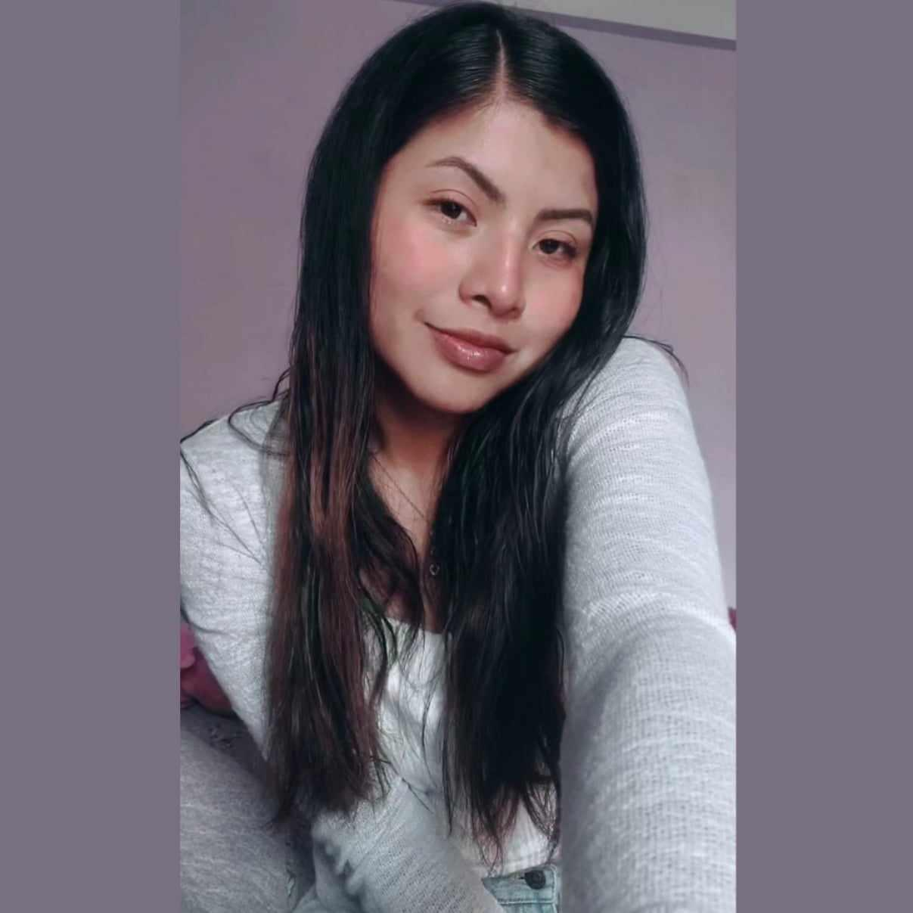

Breve presentación: ¡Hola! Bienvenido a mi MUNDO. Soy estudiante de Sistemas y, si tuviera que definirme en una sola frase, diría que soy una mente curiosa a la que le fascina hacer de todo. Me encanta aprender constantemente sobre diferentes áreas, explorar nuevas habilidades y meterme de lleno en cualquier proyecto creativo, técnico o práctico que despierte mi interés. Para mí, la tecnología no es solo mi carrera, sino la herramienta perfecta para conectar todas las cosas que me gusta hacer. .
Desde muy pequeña fui esa niña curiosa que no podía quedarse quieta y que necesitaba entender cómo funcionaba el mundo. Si un juguete hacía ruido o se movía, mi primer impulso era intentar desarmarlo para ver qué tenía dentro; me fascinaba experimentar, pintar, construir cosas con lo que encontrara y meter la cabeza en cuanto pasatiempo nuevo me llamara la atención. Al llegar a la adolescencia, esa inquietud por probar de todo solo se multiplicó. Pasé por mil etapas: un tiempo me dio por el arte y el diseño, luego por la música, la lectura, los deportes o aprender cosas al azar por mi cuenta. Nunca fui de encajar en una sola etiqueta porque todo me daba curiosidad. Fue justamente en esa búsqueda constante donde descubrí las computadoras no solo para jugar, sino como un lienzo infinito. Me di cuenta de que la tecnología me permitía crear, armar, diseñar y resolver problemas en un solo lugar, convirtiéndose en el puente perfecto entre mi lado creativo y mi mente analítica
Uno de los hitos más significativos en mi vida fue tener mi primera computadora de escritorio a los 8 años, la cual fue regalo de cumpleaños, contaba con una buena maestra de computacion en el colegio que nos hacia hacer manteniiento, con ese conocimiento la armaba y desarmaba.
No me veo encasillada en un solo rol tradicional, sino construyendo un perfil versátil donde pueda conectar diferentes áreas de la tecnología. Graduarme con honores como ingeniera de sistemas y dominar áreas clave como el desarrollo de software, la arquitectura de datos y la inteligencia artificial. También quiero sumar experiencia práctica liderando o colaborando en proyectos reales donde pueda aportar mi capacidad para resolver problemas desde diferentes ángulos.